1. Tổng quan Database Authentication
1.1. Tại sao cần Database Authentication?
Ở chương trước chúng ta đã xác thực bằng InMemoryUserDetailsManager.

| Ưu điểm | Nhược điểm |
|---|---|
|
|
Đó là lý do mọi ứng dụng thực tế đều lưu người dùng trong Database.
1.2. Database Authentication là gì?
Database Authentication là cơ chế xác thực mà thông tin người dùng được lưu trong cơ sở dữ liệu thay vì lưu trong bộ nhớ.
| id | username | password | role | enabled |
|---|---|---|---|---|
| 1 | admin | $2a$10... | ROLE_ADMIN | true |
| 2 | manh | $2a$10... | ROLE_USER | true |
| 3 | hoa | $2a$10... | ROLE_MANAGER | true |
Người dùng nhập:
- Username: admin
- Password: 123456
Spring Security sẽ:
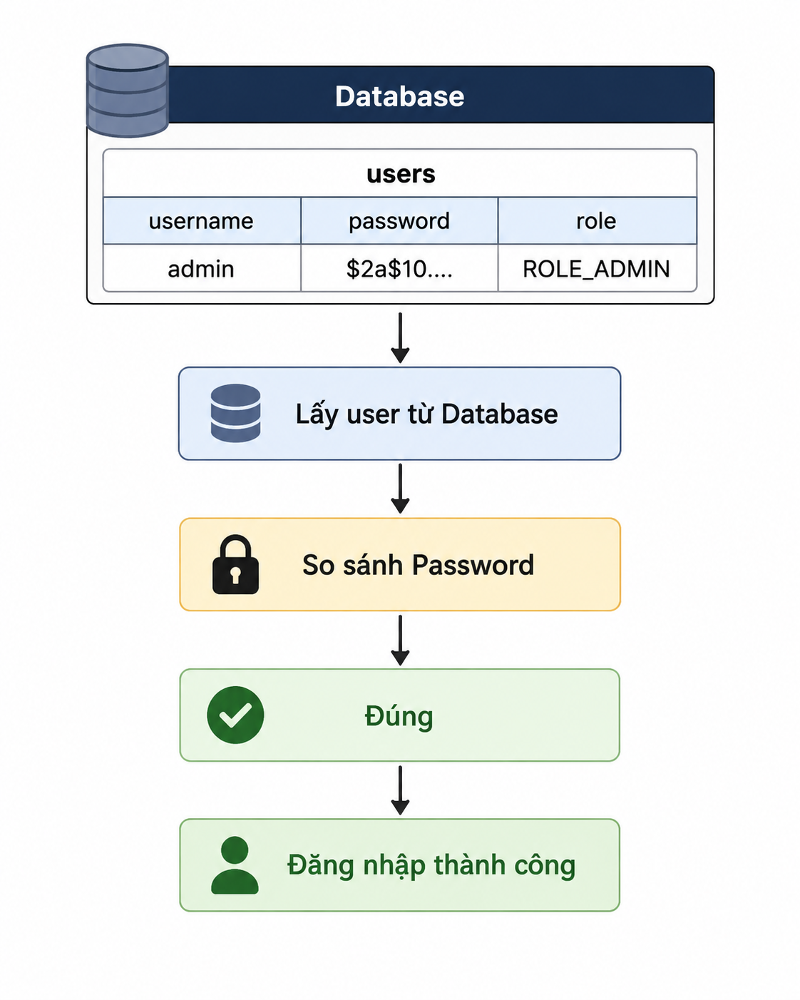
1.3. Authentication là gì?
Authentication nghĩa là: Xác minh danh tính người dùng.
Ví dụ
Người dùng khai báo
- Tên đăng nhập: admin
- Mật khẩu: 123456
Spring Security sẽ kiểm tra:
- Có user này không? → Có
- Password đúng không? → Đúng
- Authenticated = true
Nếu sai → Authenticated = false
1.4. Authentication khác Authorization như thế nào?
Đây là hai khái niệm rất dễ nhầm lẫn.
| Authentication | Authorization |
|---|---|
| Xác minh bạn là ai | Kiểm tra bạn được làm gì |
| Đăng nhập | Phân quyền |
| Username + Password | Role, Authority |
| Xảy ra trước | Xảy ra sau |
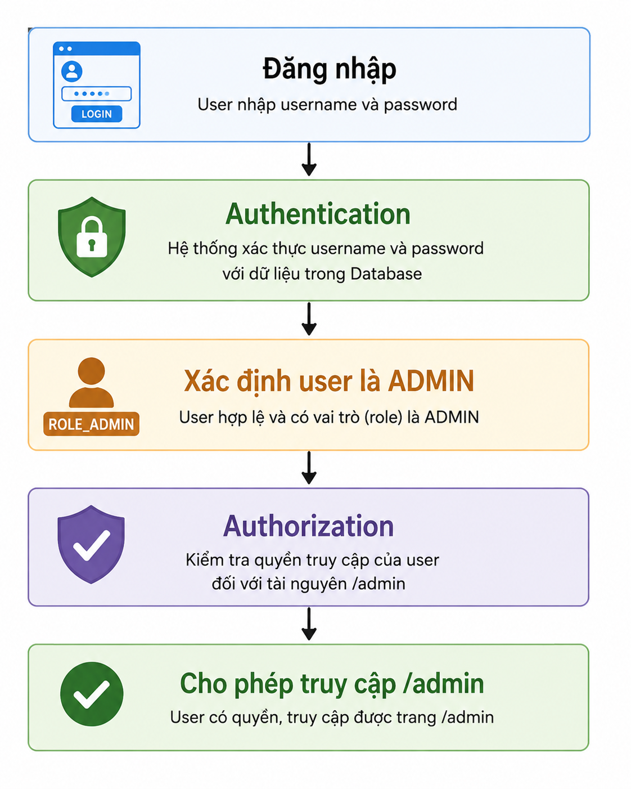
1.5. Database Authentication hoạt động như thế nào?
Khi người dùng gửi yêu cầu đăng nhập, Spring Security sẽ thực hiện một chuỗi các bước để xác thực.
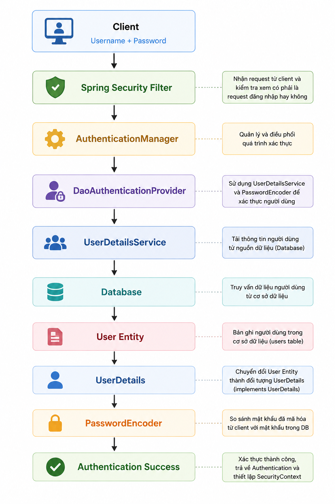
Giải thích:
- Client: gửi username và password.
- AuthenticationManager: tiếp nhận yêu cầu xác thực.
- DaoAuthenticationProvider: xử lý việc xác thực dựa trên dữ liệu trong cơ sở dữ liệu.
- UserDetailsService: tải thông tin người dùng.
- Database: nơi lưu tài khoản.
- UserDetails: đối tượng chuẩn mà Spring Security sử dụng để làm việc.
- PasswordEncoder: so sánh mật khẩu người dùng nhập với mật khẩu đã mã hóa trong Database.
Lưu ý: Password trong Database không bao giờ lưu dạng văn bản thuần (plain text) mà luôn được mã hóa, phổ biến nhất là BCrypt.
1.6. So sánh InMemory và Database Authentication
| Tiêu chí | InMemory | Database |
|---|---|---|
| Lưu User | RAM | MySQL |
| Thêm User | Code Java | API Register |
| Đổi Password | Code | Database |
| Phân quyền | Code | Database |
| Restart Server | Mất dữ liệu | Không mất |
| Thực tế | Không | Có |
User.withUsername("admin")
SELECT * FROM users WHERE username = 'admin';
1.7. Thành phần sẽ xây dựng trong chương này
Trong chương 3, chúng ta sẽ xây dựng đầy đủ cơ chế xác thực từ cơ sở dữ liệu.
| Thành phần | Mục đích |
|---|---|
| User Entity | Ánh xạ bảng users trong Database |
| UserRepository | Truy vấn dữ liệu người dùng |
| CustomUserDetailsService | Tải người dùng từ Database |
| UserDetails | Đối tượng chuẩn mà Spring Security sử dụng để xác thực |
| AuthenticationManager | Điều phối quá trình xác thực |
| DaoAuthenticationProvider | Kiểm tra username và password |
| PasswordEncoder | Mã hóa và kiểm tra mật khẩu |
| SecurityFilterChain | Cấu hình bảo mật cho ứng dụng |
| Register API | Đăng ký tài khoản mới |
| Basic Authentication | Kiểm thử quá trình đăng nhập |
2. Chuẩn bị dữ liệu người dùng (Bảng users)
2.1. Tại sao cần bảng users?
Ở chương trước, thông tin người dùng được khai báo trực tiếp trong mã nguồn:
UserDetails user = User.withUsername("admin") .password(passwordEncoder().encode("123456")) .roles("ADMIN") .build();
Điều này có nghĩa:
- User được lưu trong RAM.
- Không thể thêm tài khoản mới khi chương trình đang chạy.
- Muốn thay đổi tài khoản phải sửa code.
Trong ứng dụng thực tế, tài khoản cần được lưu trong cơ sở dữ liệu.
Khi người dùng đăng nhập, Spring Security sẽ truy vấn bảng users để lấy thông tin xác thực.
2.2. Thiết kế bảng users
Trong khóa học này, chúng ta sử dụng bảng đơn giản như sau:
| Cột | Kiểu dữ liệu | Ý nghĩa |
|---|---|---|
| id | BIGINT | Khóa chính |
| username | VARCHAR(50) | Tên đăng nhập |
| password | VARCHAR(255) | Mật khẩu đã mã hóa BCrypt |
| role | VARCHAR(50) | Vai trò của người dùng |
| enabled | BOOLEAN | Trạng thái tài khoản |
2.3. Ý nghĩa của từng trường
3.1 id
Đây là khóa chính của bảng.
| id | username |
|---|---|
| 1 | admin |
| 2 | manh |
| 3 | hoa |
Spring Security không sử dụng trực tiếp id để đăng nhập, nhưng đây là khóa chính giúp quản lý dữ liệu.
3.2 username
Tên đăng nhập của người dùng.
Ví dụ:
- admin
- manh
- hoa
Đây là trường mà Spring Security sẽ dùng để tìm kiếm người dùng.
SELECT * FROM users WHERE username = 'admin';
Thông thường, trường này nên được đặt ràng buộc UNIQUE để tránh trùng tên đăng nhập.
3.3 password
Đây là mật khẩu đã được mã hóa.
$2a$10$gPk8...
Không bao giờ lưu:
123456
Vì:
- Dễ bị đánh cắp.
- Không đảm bảo an toàn.
Luôn lưu:
BCrypt Hash
User nhập: 123456
│
▼
PasswordEncoder.matches()
│
▼
So sánh với: $2a$10.....
│
▼
Nếu khớp → đăng nhập thành công
3.4 role
Cho biết quyền của người dùng.
| username | role |
|---|---|
| admin | ROLE_ADMIN |
| manh | ROLE_USER |
| hoa | ROLE_MANAGER |
Sau khi xác thực thành công, Spring Security sẽ dựa vào role để kiểm tra quyền truy cập.
.hasRole("ADMIN")
Lưu ý: Trong Spring Security, theo quy ước nên lưu role với tiền tố ROLE_, ví dụ: ROLE_USER, ROLE_ADMIN.
3.5 enabled
Cho biết tài khoản còn hoạt động hay không.
| enabled | Ý nghĩa |
|---|---|
| true | Có thể đăng nhập |
| false | Không được đăng nhập |
admin (enabled = true) → Đăng nhập thành công admin (enabled = false) → DisabledException
Trong thực tế, trường này thường được dùng để:
- Khóa tài khoản.
- Vô hiệu hóa tài khoản nghỉ việc.
- Tạm ngưng người dùng vi phạm.
2.4. Tạo cơ sở dữ liệu
-- Tạo database CREATE DATABASE spring_security_db; -- Sử dụng database USE spring_security_db;
2.5. Tạo bảng users
CREATE TABLE users (
id BIGINT AUTO_INCREMENT PRIMARY KEY,
username VARCHAR(50) NOT NULL UNIQUE,
password VARCHAR(255) NOT NULL,
role VARCHAR(50) NOT NULL,
enabled BOOLEAN NOT NULL DEFAULT TRUE
);
Giải thích:
| Thành phần | Ý nghĩa |
|---|---|
| AUTO_INCREMENT | Tự tăng khóa chính |
| PRIMARY KEY | Khóa chính |
| UNIQUE | Không cho phép trùng username |
| NOT NULL | Không được để trống |
| DEFAULT TRUE | Mặc định tài khoản được kích hoạt |
2.6. Chèn dữ liệu mẫu
Để kiểm thử, chúng ta cần thêm một số người dùng.
INSERT INTO users (username, password, role, enabled) VALUES
('admin', '$2a$10$xxxxxxxxxxxxxxxxxxxxxxxxxxxxxxxxxxxxxxxxxxxxxxxxxxxx', 'ROLE_ADMIN', true),
('user1', '$2a$10$yyyyyyyyyyyyyyyyyyyyyyyyyyyyyyyyyyyyyyyyyyyyyyyyyyyy', 'ROLE_USER', true),
('manager', '$2a$10$zzzzzzzzzzzzzzzzzzzzzzzzzzzzzzzzzzzzzzzzzzzzzzzzzzzz', 'ROLE_MANAGER', true);
Lưu ý: Các chuỗi bắt đầu bằng $2a$10$... chỉ là ví dụ minh họa. Trong thực tế, bạn cần sử dụng BCryptPasswordEncoder để tạo mật khẩu mã hóa.
2.7. Kiểm tra dữ liệu
SELECT * FROM users;
| id | username | password | role | enabled |
|---|---|---|---|---|
| 1 | admin | $2a$10... | ROLE_ADMIN | 1 |
| 2 | user1 | $2a$10... | ROLE_USER | 1 |
| 3 | manager | $2a$10... | ROLE_MANAGER | 1 |
2.8. Luồng hoạt động của bảng users
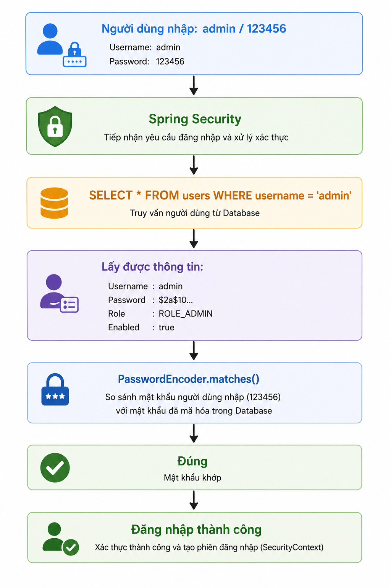
2.9. Một số lưu ý khi thiết kế bảng users
- username nên có ràng buộc UNIQUE.
- Không lưu mật khẩu ở dạng văn bản thuần (Plain Text).
- Luôn mã hóa mật khẩu bằng BCryptPasswordEncoder.
- Vai trò nên lưu theo chuẩn ROLE_USER, ROLE_ADMIN,...
- Nên có trường enabled để hỗ trợ khóa hoặc mở tài khoản mà không cần xóa dữ liệu.
Mở rộng: Trong các hệ thống lớn, bảng users thường được tách khỏi bảng roles và liên kết qua bảng trung gian user_roles để một người dùng có thể có nhiều vai trò. Tuy nhiên, để tập trung vào cơ chế xác thực trong chương này, chúng ta sử dụng mô hình đơn giản với một cột role.
3. UserDetailsService
3.1. UserDetailsService là gì?
UserDetailsService là một interface do Spring Security cung cấp.
Nhiệm vụ chính của nó là: Tìm và tải thông tin người dùng dựa trên username.
Nói cách khác: Khi người dùng nhập username: admin, password: 123456, Spring
Security sẽ hỏi: "Trong Database có user tên admin không?"
Việc tìm kiếm đó được thực hiện bởi UserDetailsService.
3.2. Vị trí của UserDetailsService trong Spring Security
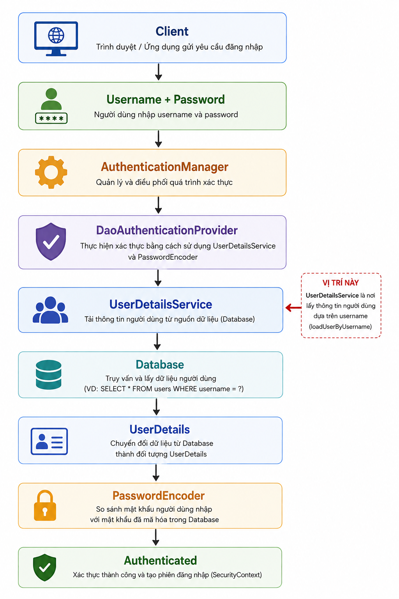
Trong luồng trên:
- AuthenticationManager điều phối quá trình xác thực.
- DaoAuthenticationProvider xử lý xác thực.
- UserDetailsService lấy thông tin người dùng.
- PasswordEncoder kiểm tra mật khẩu.
Có thể thấy: UserDetailsService là cầu nối giữa Spring Security và Database.
3.3. Vì sao cần UserDetailsService?
Giả sử Database có bảng:
| id | username | password | role |
|---|---|---|---|
| 1 | admin | ... | ROLE_ADMIN |
| 2 | user | ... | ROLE_USER |
Khi người dùng nhập admin / 123456, Spring Security không biết:
- Database là MySQL hay PostgreSQL?
- Dữ liệu nằm trong bảng nào?
- Truy vấn bằng Repository nào?
- Entity tên gì?
Do đó Spring Security giao nhiệm vụ này cho UserDetailsService.
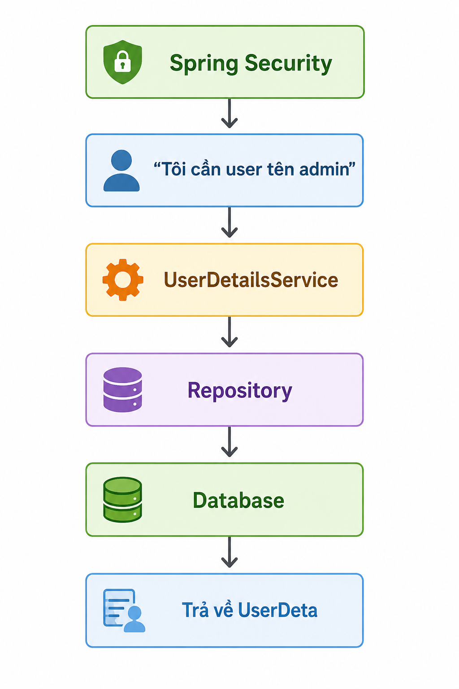
Nhờ vậy, Spring Security không phụ thuộc vào cách bạn thiết kế cơ sở dữ liệu.
3.4. Interface UserDetailsService (Có sẵn, ko cần tạo)
package com.example.demo.service; import org.springframework.security.core.userdetails.UserDetails; import org.springframework.security.core.userdetails.UsernameNotFoundException; public interface UserDetailsService { UserDetails loadUserByUsername(String username) throws UsernameNotFoundException; }
Đây là interface chỉ có một phương thức:
UserDetails loadUserByUsername(String username)
Ý nghĩa:
- Nhận vào username.
- Tìm user trong Database.
- Nếu tìm thấy → trả về UserDetails.
- Nếu không tìm thấy → ném UsernameNotFoundException.
3.5. Ý nghĩa của loadUserByUsername()
Đây là phương thức quan trọng nhất của UserDetailsService.
Ví dụ: loadUserByUsername("admin")
Spring Security mong muốn nhận được:
- Username: admin
- Password: BCrypt Password
- Authorities: ROLE_ADMIN
Nếu không tìm thấy:
throw new UsernameNotFoundException("User not found");
Spring Security sẽ dừng quá trình xác thực.
3.6. Khi nào Spring Security gọi UserDetailsService?
Giả sử Client gửi:
GET /api/users Authorization: Basic xxxxxxxxx
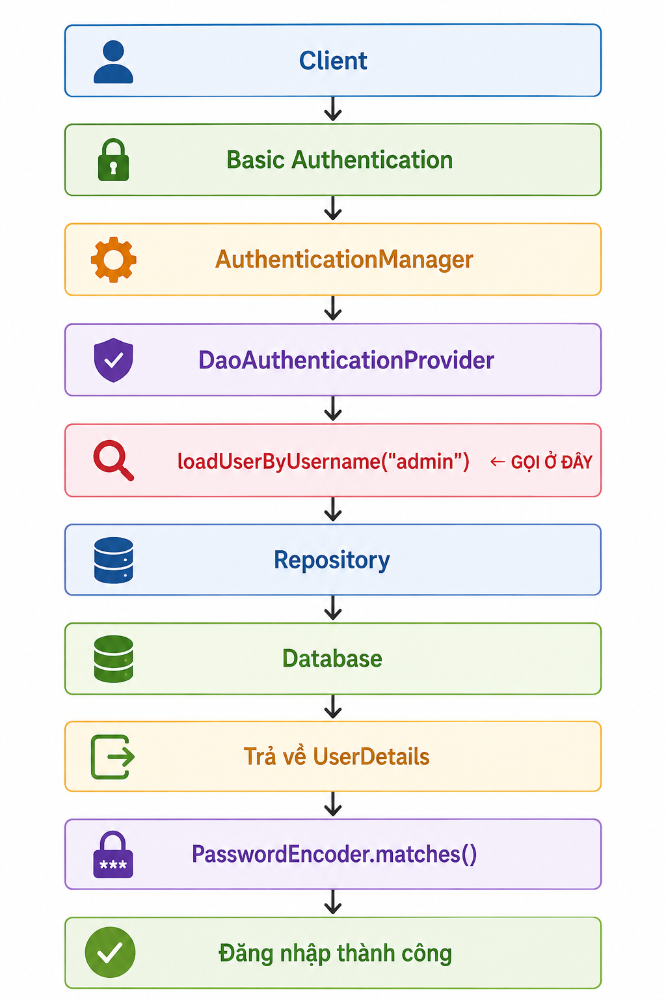
Điều quan trọng: Bạn không cần tự gọi loadUserByUsername().
Spring Security sẽ tự động gọi phương thức này trong quá trình xác thực.
3.7. UserDetailsService không kiểm tra mật khẩu
Đây là điểm rất nhiều người mới học nhầm lẫn.
Nhiệm vụ của UserDetailsService chỉ là:
- ✔ Tìm người dùng.
- ✔ Trả về UserDetails.
Nó không:
- So sánh mật khẩu.
- Kiểm tra quyền.
- Kiểm tra URL.
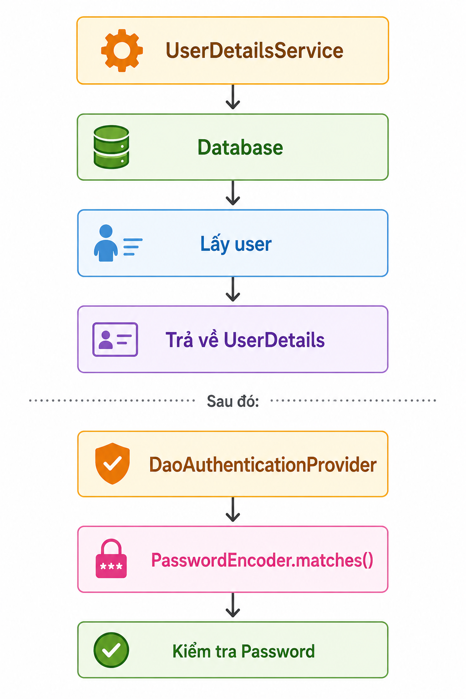
=> Hai nhiệm vụ hoàn toàn tách biệt.
3.8. UserDetailsService và UserDetails khác nhau thế nào?
Đây là hai khái niệm rất dễ nhầm lẫn.
| UserDetailsService | UserDetails |
|---|---|
| Interface | Interface |
| Có nhiệm vụ tìm user | Chứa thông tin user |
| Làm việc với Database | Làm việc với Spring Security |
| Có phương thức loadUserByUsername() | Có username, password, authorities,... |
| Chỉ có một đối tượng Service | Mỗi user sẽ có một đối tượng UserDetails |
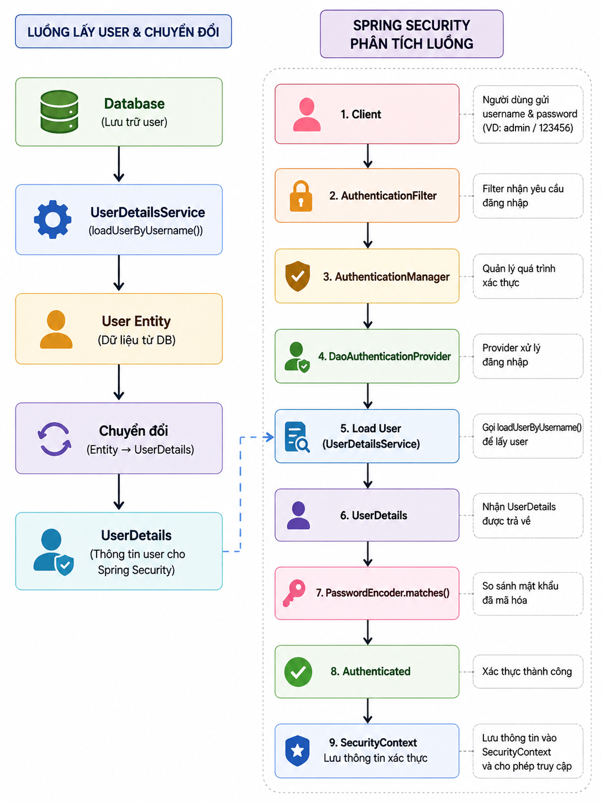
3.9. User Entity và UserDetails
Trong dự án của chúng ta sẽ có Entity:
@Entity @Table(name = "users") public class User { private Long id; private String username; private String password; private String role; private boolean enabled; }
Đây là Entity của JPA. Nhưng Spring Security không sử dụng Entity này trực tiếp. Spring Security chỉ làm việc với UserDetails.
Do đó cần chuyển đổi:
User Entity → UserDetails
Việc chuyển đổi này sẽ được thực hiện trong bài tiếp theo khi xây dựng CustomUserDetailsService.
3.10. Ví dụ trực quan
| Username | Password | Role |
|---|---|---|
| admin | BCrypt | ROLE_ADMIN |
Người dùng đăng nhập: admin / 123456
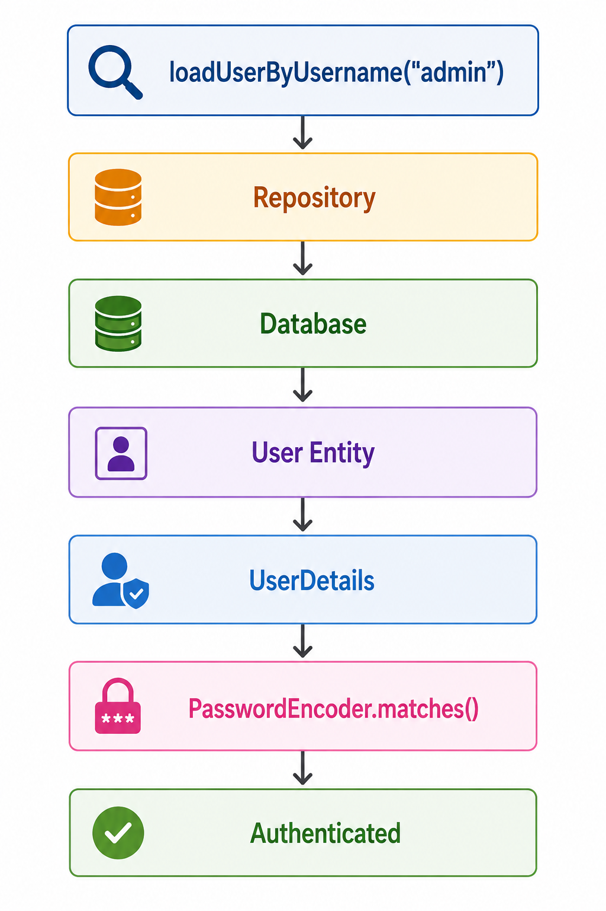
3.11. Những lỗi thường gặp
Lỗi 1: Không tìm thấy User
return repository.findByUsername(username).get();
Nếu không có dữ liệu: NoSuchElementException
Nên sử dụng:
return repository.findByUsername(username) .orElseThrow(() -> new UsernameNotFoundException("User not found"));
Lỗi 2: Trả về null
return null;
Spring Security sẽ không thể xác thực người dùng và có thể phát sinh lỗi trong quá trình đăng nhập.
Lỗi 3: Kiểm tra Password trong UserDetailsService
if (password.equals(...))
UserDetailsService không nhận password. Password sẽ được Spring Security kiểm tra sau.
3.12. Tóm tắt luồng hoạt động
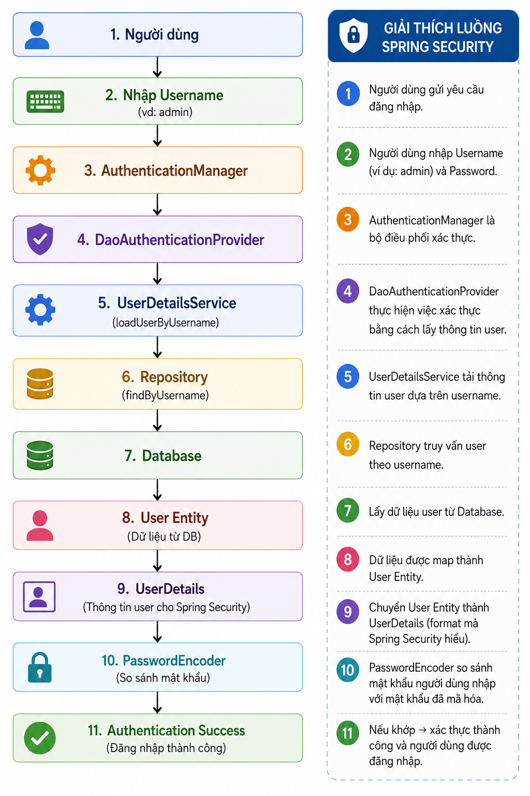
4. Xây dựng CustomUserDetailsService
4.1. CustomUserDetailsService là gì?
Ở mục trước, chúng ta đã biết Spring Security cung cấp interface UserDetailsService.
Đây chỉ là một interface, Spring Security không biết:
- User được lưu ở đâu.
- Dùng MySQL hay PostgreSQL.
- Dùng JPA hay JDBC.
- Repository tên gì.
Do đó chúng ta phải tự viết một class để cài đặt interface này.
@Service public class CustomUserDetailsService implements UserDetailsService { }
Class này được gọi là CustomUserDetailsService. Chữ Custom nghĩa là: "Do lập trình viên tự xây dựng."
4.2. Vai trò của CustomUserDetailsService
Nhiệm vụ của class này rất đơn giản.
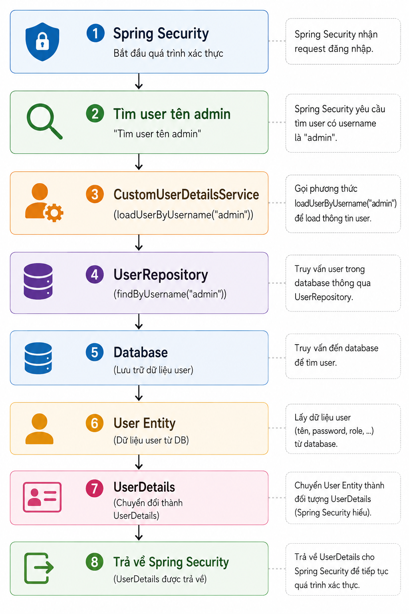
Nói cách khác: Đây là cầu nối giữa Spring Security và Database.
4.3. Chuẩn bị UserRepository
Giả sử chúng ta đã có Entity:
@Entity @Table(name = "users") public class User { private Long id; private String username; private String password; private String role; private boolean enabled; }
Repository:
@Repository public interface UserRepository extends JpaRepository<User, int> { Optional<User> findByUsername(String username); }
Giải thích: Spring Data JPA sẽ tự sinh SQL:
SELECT * FROM users WHERE username = ? Chúng ta không cần tự viết SQL.
4.4. Tạo CustomUserDetailsService
@Service public class CustomUserDetailsService implements UserDetailsService { }
Giải thích:
- @Service → Đăng ký class thành Spring Bean.
- implements UserDetailsService → Thông báo với Spring Security rằng: "Đây là class dùng để tải thông tin người dùng."
4.5. Inject UserRepository
@Service public class CustomUserDetailsService implements UserDetailsService { @Autowired private UserRepository repository; }
Giải thích: Spring sẽ tự inject Repository. Sau đó chúng ta có thể truy vấn Database.
4.6. Override loadUserByUsername()
Đây là phương thức quan trọng nhất.
@Override public UserDetails loadUserByUsername(String username) throws UsernameNotFoundException { }
Ý nghĩa: Spring Security sẽ tự động gọi phương thức này khi người dùng đăng nhập.
Ví dụ: Username admin → Spring gọi loadUserByUsername("admin").
4.7. Lấy User từ Database
User user = repository.findByUsername(username)
.orElseThrow(() ->
new UsernameNotFoundException("User not found"));
Giải thích:
- Repository trả về Optional<User>.
- Nếu tìm thấy → Trả về User.
- Nếu không tìm thấy → Ném Exception.
4.8. Vì sao phải dùng UsernameNotFoundException?
Sai: throw new RuntimeException();
Spring Security không hiểu đây là lỗi gì.
Đúng: throw new UsernameNotFoundException("User not found");
Spring Security hiểu rằng: "Không tồn tại Username."
Sau đó trả về lỗi xác thực.
4.9. Chuyển User Entity thành UserDetails
Giả sử lấy được Entity từ Database:
return org.springframework.security.core.userdetails.User
.builder()
.username(user.getUsername())
.password(user.getPassword())
.authorities(user.getRole())
.disabled(!user.isEnabled())
.build();
Giải thích từng dòng trong Builder:
| Phương thức | Ý nghĩa |
|---|---|
| username(user.getUsername()) | Lấy tên đăng nhập từ Entity. |
| password(user.getPassword()) | Lấy mật khẩu đã mã hóa từ Database. |
| authorities(user.getRole()) | Lấy quyền từ Entity. |
| disabled(!user.isEnabled()) | Nếu enabled = false → vô hiệu hóa tài khoản. |
4.10. Toàn bộ CustomUserDetailsService
package com.example.demo.service; import com.example.demo.entity.User; import com.example.demo.repository.UserRepo; import org.springframework.security.core.userdetails.UserDetails; import org.springframework.security.core.userdetails.UserDetailsService; import org.springframework.security.core.userdetails.UsernameNotFoundException; import org.springframework.stereotype.Service; @Service public class CustomUserDetailsService implements UserDetailsService { @Autowired private UserRepository repository; @Override public UserDetails loadUserByUsername(String username) throws UsernameNotFoundException { User user = repository.findByUsername(username) .orElseThrow(() -> new UsernameNotFoundException( "User not found" ) ); return org.springframework.security.core.userdetails.User .builder() .username(user.getUsername()) .password(user.getPassword()) .authorities(user.getRole()) .disabled(!user.isEnabled()) .build(); } }
Đây là phiên bản đầy đủ và được sử dụng phổ biến trong các ứng dụng Spring Security.
4.11. Luồng hoạt động
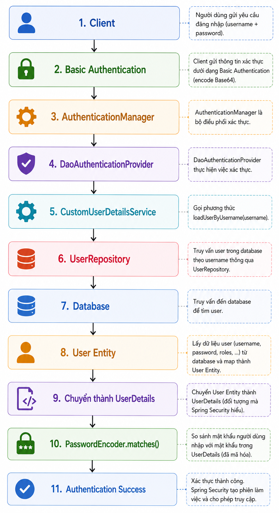
4.13. Những lỗi thường gặp
Lỗi 1: Quên @Service
public class CustomUserDetailsService
Hậu quả: Spring không tạo Bean. Đăng nhập sẽ thất bại.
Lỗi 2: Trả về Entity
return user;
Entity không implement UserDetails. Spring Security không thể sử dụng.
Lỗi 3: Trả về null
return null;
Sẽ gây lỗi trong quá trình xác thực.
Lỗi 4: Không xử lý Optional
repository.findByUsername(username).get();
Nếu không có user → NoSuchElementException. Nên dùng .orElseThrow(...)
Lỗi 5: Truyền sai quyền
.authorities("ADMIN")
Nếu Database lưu ROLE_ADMIN thì phải trả về đúng:
.authorities("ROLE_ADMIN"). Hoặc nếu dùng .roles(...) thì chỉ truyền "ADMIN" vì
Spring sẽ tự thêm tiền tố ROLE_.
5. Chuyển User Entity → UserDetails
5.1. Vì sao phải chuyển User Entity thành UserDetails?
Giả sử trong cơ sở dữ liệu có bảng users:
| id | username | password | role | enabled |
|---|---|---|---|---|
| 1 | admin | $2a$10... | ROLE_ADMIN | true |
JPA sẽ ánh xạ thành Entity:
@Entity @Table(name = "users") public class User { private Long id; private String username; private String password; private String role; private boolean enabled; }
Entity này được sử dụng để làm việc với cơ sở dữ liệu. Tuy nhiên, Spring Security không làm việc trực tiếp với Entity mà chỉ làm việc với đối tượng UserDetails.
Do đó cần thực hiện bước chuyển đổi:
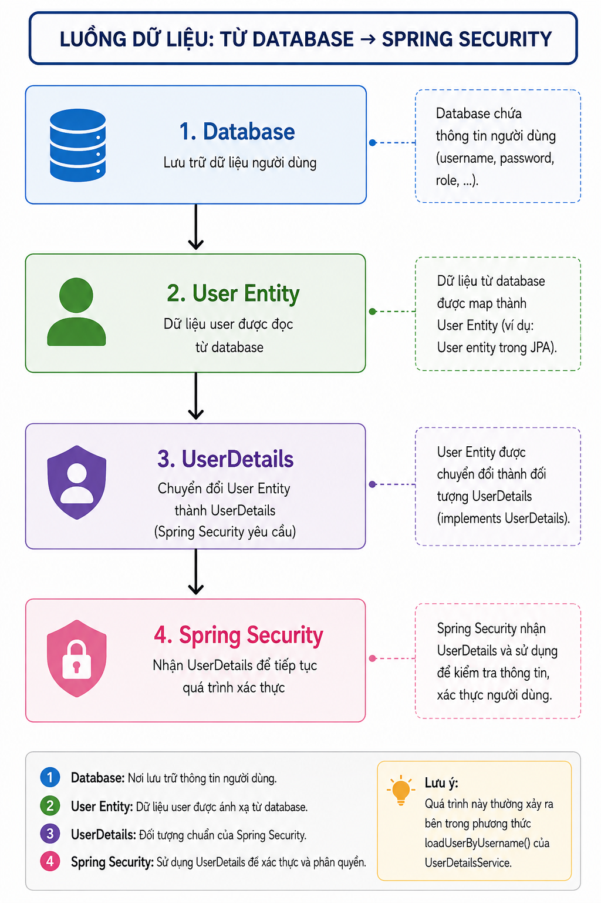
5.2. UserDetails là gì?
UserDetails là interface chuẩn của Spring Security. Nó chứa toàn bộ thông tin mà Spring Security cần trong quá trình xác thực.
Các thông tin chính gồm:
- Username
- Password
- Quyền (Authorities)
- Trạng thái tài khoản
Spring Security sẽ sử dụng những thông tin này để:
- Kiểm tra tên đăng nhập
- Kiểm tra mật khẩu
- Kiểm tra quyền truy cập
- Kiểm tra tài khoản có bị khóa hay vô hiệu hóa hay không
5.3. Các thông tin trong UserDetails
Một đối tượng UserDetails thường chứa:
| Thuộc tính | Ý nghĩa |
|---|---|
| Username | Tên đăng nhập |
| Password | Mật khẩu đã mã hóa |
| Authorities | Danh sách quyền |
| Enabled | Tài khoản có hoạt động không |
Username : admin Password : $2a$10.... Authorities : ROLE_ADMIN Enabled : true
5.4. Spring Security đã cung cấp sẵn UserDetails
May mắn là chúng ta không cần tự tạo lớp UserDetails. Spring Security đã cung cấp sẵn class:
org.springframework.security.core.userdetails.User
Class này đã triển khai (implements) interface UserDetails. Chúng ta chỉ cần sử dụng Builder để tạo đối tượng.
return org.springframework.security.core.userdetails.User .builder() .username("admin") .password("$2a$10....") .authorities("ROLE_ADMIN") .build();
Đây là cách được sử dụng phổ biến trong các dự án vừa và nhỏ.
5.5. Chuyển User Entity thành UserDetails
Giả sử lấy được Entity từ Database:
User user = repository.findByUsername(username)
.orElseThrow(() ->
new UsernameNotFoundException("User not found"));
Ta chuyển thành UserDetails như sau:
return org.springframework.security.core.userdetails.User
.builder()
.username(user.getUsername())
.password(user.getPassword())
.authorities(user.getRole())
.disabled(!user.isEnabled())
.build();
Sau bước này, Spring Security sẽ sử dụng đối tượng UserDetails để tiếp tục quá trình xác thực.
5.6. Giải thích từng dòng trong Builder
username
.username(user.getUsername())
Lấy tên đăng nhập từ Entity. Ví dụ: admin → Đưa vào UserDetails.
password
.password(user.getPassword())
Lấy mật khẩu đã mã hóa từ Database. Ví dụ: $2a$10$......
Lưu ý: Không truyền mật khẩu gốc như 123456. Spring
Security sẽ dùng PasswordEncoder để so sánh mật khẩu người dùng nhập với chuỗi đã mã
hóa.
authorities
.authorities(user.getRole())
Lấy quyền từ Entity. Ví dụ: ROLE_ADMIN hoặc ROLE_USER.
Nếu một người dùng có nhiều quyền, có thể truyền nhiều giá trị:
.authorities("ROLE_ADMIN", "ROLE_USER")
disabled
.disabled(!user.isEnabled())
Giải thích:
- Nếu trong Database:
enabled = true→.disabled(false)→ Được phép đăng nhập. - Nếu:
enabled = false→.disabled(true)→ Spring Security sẽ từ chối đăng nhập.
Tóm lại: Quá trình chuyển đổi User Entity → UserDetails giúp Spring Security hiểu được thông tin người dùng mà không cần biết cấu trúc Database cụ thể.
6. AuthenticationManager và cơ chế xác thực
6.1. Tổng quan về AuthenticationManager
AuthenticationManager là một thành phần trung tâm trong Spring Security, chịu trách nhiệm điều phối toàn bộ quá trình xác thực.
Khi người dùng gửi yêu cầu đăng nhập, AuthenticationManager sẽ:
- Nhận thông tin đăng nhập (username/password)
- Ủy quyền cho các AuthenticationProvider phù hợp
- Kiểm tra thông tin
- Trả về kết quả xác thực
6.2. Vì sao cần AuthenticationManager?
Giả sử không có AuthenticationManager:
- Mỗi API phải tự kiểm tra username/password
- Code bị lặp lại
- Khó quản lý
- Dễ thiếu sót
AuthenticationManager giải quyết vấn đề này bằng cách:
- Tập trung logic xác thực tại một nơi
- Tách biệt nhiệm vụ xác thực khỏi các thành phần khác
- Hỗ trợ nhiều cơ chế xác thực (Basic Auth, Form Login, JWT,...)
6.3. Cấu hình AuthenticationManager Bean
Sau khi đã tìm hiểu vai trò của AuthenticationManager, chúng ta cần đăng ký thành phần này thành một Spring Bean để có thể sử dụng trong ứng dụng.
Trong Spring Boot 4, việc cấu hình rất đơn giản:
@Bean public AuthenticationManager authenticationManager( AuthenticationConfiguration configuration) throws Exception { return configuration.getAuthenticationManager(); }
Giải thích:
- @Bean → Đăng ký AuthenticationManager vào Spring Container để các thành phần khác có thể sử dụng thông qua cơ chế Dependency Injection.
- AuthenticationConfiguration → Là lớp do Spring Security cung cấp, chứa toàn bộ cấu hình xác thực của ứng dụng. Spring Boot sẽ tự động tạo đối tượng này khi khởi động ứng dụng.
- getAuthenticationManager() → Phương thức này trả về đối tượng AuthenticationManager đã được Spring Boot cấu hình sẵn. Đối tượng này đã được liên kết với DaoAuthenticationProvider, UserDetailsService và PasswordEncoder.
Do đó, lập trình viên không cần tự khởi tạo AuthenticationManager.
6.4. Luồng hoạt động
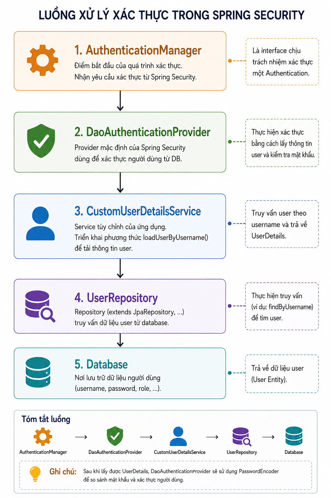
Khi người dùng đăng nhập, Spring Security sẽ sử dụng AuthenticationManager để điều phối quá trình xác thực.
6.5. Cấu hình SecurityFilterChain
Sau khi có AuthenticationManager, bước tiếp theo là cấu hình các quy tắc bảo mật của ứng dụng bằng SecurityFilterChain.
@Bean public SecurityFilterChain securityFilterChain( HttpSecurity http) throws Exception { http .csrf(csrf -> csrf.disable()) .authorizeHttpRequests(auth -> auth // không cần login .requestMatchers("/api/demo/public") .permitAll() // cần ROLE_USER .requestMatchers("/api/demo/user") .hasRole("USER") // cần ROLE_ADMIN .requestMatchers("/api/demo/admin") .hasRole("ADMIN") // tất cả còn lại phải login .anyRequest() .authenticated() ) .httpBasic(Customizer.withDefaults()); return http.build(); }
Giải thích:
| Thành phần | Ý nghĩa |
|---|---|
| SecurityFilterChain | Chuỗi các bộ lọc của Spring Security. Mọi Request đều phải đi qua chuỗi này trước khi đến Controller. |
| csrf(AbstractHttpConfigurer::disable) | Tắt CSRF (phù hợp với REST API dùng Basic Auth hoặc JWT). |
| requestMatchers("/api/auth/**").permitAll() | Cho phép truy cập public vào các API đăng ký/đăng nhập. |
| anyRequest().authenticated() | Tất cả các URL còn lại đều yêu cầu đăng nhập. |
| httpBasic(Customizer.withDefaults()) | Kích hoạt HTTP Basic Authentication. |
| http.build() | Hoàn tất cấu hình và tạo SecurityFilterChain. |
6.6.Tổng kết SecurityConfig
package com.example.demo.config; import org.springframework.context.annotation.Bean; import org.springframework.context.annotation.Configuration; import org.springframework.security.authentication.AuthenticationManager; import org.springframework.security.config.Customizer; import org.springframework.security.config.annotation.authentication.configuration.AuthenticationConfiguration; import org.springframework.security.config.annotation.web.builders.HttpSecurity; import org.springframework.security.config.annotation.web.configuration.EnableWebSecurity; import org.springframework.security.crypto.bcrypt.BCryptPasswordEncoder; import org.springframework.security.crypto.password.PasswordEncoder; import org.springframework.security.web.SecurityFilterChain; @Configuration @EnableWebSecurity public class SecurityConfig { @Bean public SecurityFilterChain securityFilterChain( HttpSecurity http) throws Exception { http .csrf(csrf -> csrf.disable()) .authorizeHttpRequests(auth -> auth // không cần login .requestMatchers("/api/demo/public") .permitAll() // cần ROLE_USER .requestMatchers("/api/demo/user") .hasRole("USER") // cần ROLE_ADMIN .requestMatchers("/api/demo/admin") .hasRole("ADMIN") // tất cả còn lại phải login .anyRequest() .authenticated() ) .httpBasic(Customizer.withDefaults()); return http.build(); } @Bean public PasswordEncoder passwordEncoder() { return new BCryptPasswordEncoder(); } @Bean public AuthenticationManager authenticationManager( AuthenticationConfiguration configuration) throws Exception { return configuration.getAuthenticationManager(); } }
6.7. Luồng hoạt động tổng thể
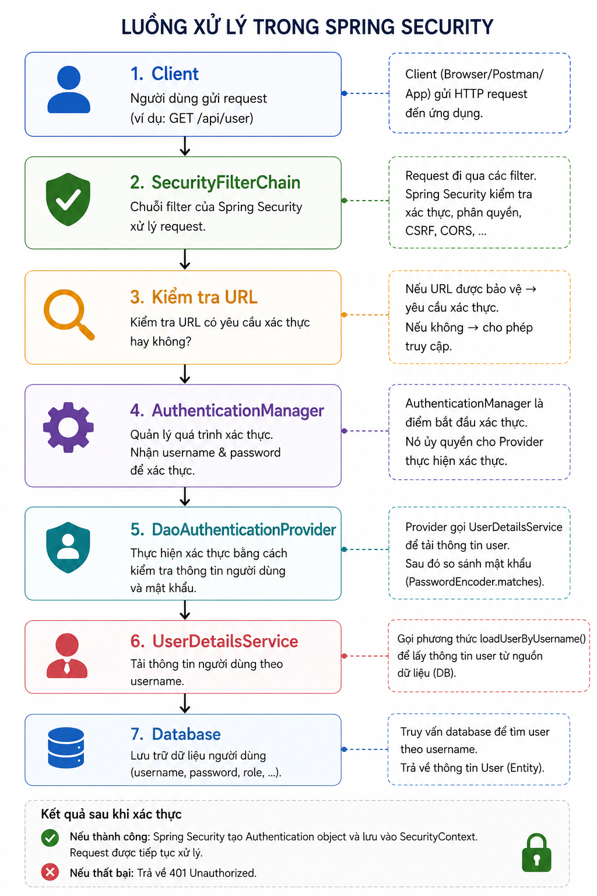
Mọi Request đều phải đi qua SecurityFilterChain. Nếu URL yêu cầu xác thực, Spring Security sẽ sử dụng AuthenticationManager để tiến hành kiểm tra thông tin đăng nhập.
Tổng hợp code
src/main/java/com/example/demo │ ├── entity │ └── User.java │ ├── repository │ └── UserRepo.java │ ├── service │ └── CustomUserDetailsService.java │ ├── config │ └── SecurityConfig.java │ ├── controller │ └── UserController.java │ └── DemoApplication.java
Script SQL tạo Database và bảng users
-- Xóa database nếu tồn tại DROP DATABASE IF EXISTS spring_security; -- Tạo database mới CREATE DATABASE spring_security; -- Sử dụng database USE spring_security; -- Tạo bảng users CREATE TABLE users ( id INT PRIMARY KEY AUTO_INCREMENT, username VARCHAR(50) NOT NULL UNIQUE, password VARCHAR(255) NOT NULL, role VARCHAR(50) NOT NULL, enabled BOOLEAN DEFAULT TRUE ); -- Chèn dữ liệu mẫu INSERT INTO users(username, password, role, enabled) VALUES ( 'user', '$2a$10$T2JPeKZzMj6ttepp4SHqhOdPHVUxfIFmlx3MtIPRpq852BJH02iVe', 'ROLE_USER', TRUE ), ( 'admin', '$2a$10$/JTzEGh18DoLoZM4sB8VT.iFz36ACxHMHr4.P5wxCH4KeDGbDnk.e', 'ROLE_ADMIN', TRUE ), ( 'manager', '$2a$10$N9qo8uLOickgx2ZMRZoMyeIjZAgcfl7p92ldGxad68LJZdL17lhWy', 'ROLE_MANAGER', TRUE ); -- Kiểm tra dữ liệu SELECT username, password, role, enabled FROM users;
Entity
package com.example.demo.entity; import jakarta.persistence.*; @Entity @Table(name = "users") public class User { @Id @GeneratedValue(strategy = GenerationType.IDENTITY) private int id; @Column(name = "username") private String username; @Column(name = "password") private String password; @Column(name = "role") private String role; @Column(name = "enabled") private boolean enabled; public User() { } public User(String username, String password, String role, boolean enabled) { this.username = username; this.password = password; this.role = role; this.enabled = enabled; } public int getId() { return id; } public void setId(int id) { this.id = id; } public boolean isEnabled() { return enabled; } public void setEnabled(boolean enabled) { this.enabled = enabled; } public String getRole() { return role; } public void setRole(String role) { this.role = role; } public String getPassword() { return password; } public void setPassword(String password) { this.password = password; } public String getUsername() { return username; } public void setUsername(String username) { this.username = username; } }
UserRepo.java
package com.example.demo.repository; import com.example.demo.entity.User; import org.springframework.data.jpa.repository.JpaRepository; import org.springframework.stereotype.Repository; import java.util.Optional; @Repository public interface UserRepo extends JpaRepository<User, Integer> { Optional<User> findByUsername(String username); }
UserController.java
package com.example.demo.controller; import com.example.demo.entity.User; import com.example.demo.service.UserService; import org.springframework.beans.factory.annotation.Autowired; import org.springframework.web.bind.annotation.*; import java.util.List; @RestController @RequestMapping("/api/demo") public class UserController { @Autowired public UserService userService; @GetMapping() public List user() { return userService.findAll(); } @GetMapping("/test") public String test() { return "This is a test endpoint"; } @GetMapping("/public") public String publicEndpoint() { return "This is a public endpoint"; } @GetMapping("/user") public String userEndpoint() { return "Hello User!"; } @GetMapping("/admin") public String adminEndpoint() { return "Hello Admin!"; } @PostMapping("/public") public void saveUser(@RequestBody User user) { System.out.println(user); userService.saveUser(user); } }
SecurityConfig.java
package com.example.demo.config; import org.springframework.context.annotation.Bean; import org.springframework.context.annotation.Configuration; import org.springframework.security.authentication.AuthenticationManager; import org.springframework.security.config.Customizer; import org.springframework.security.config.annotation.authentication.configuration.AuthenticationConfiguration; import org.springframework.security.config.annotation.web.builders.HttpSecurity; import org.springframework.security.config.annotation.web.configuration.EnableWebSecurity; import org.springframework.security.crypto.bcrypt.BCryptPasswordEncoder; import org.springframework.security.crypto.password.PasswordEncoder; import org.springframework.security.web.SecurityFilterChain; @Configuration @EnableWebSecurity public class SecurityConfig { @Bean public SecurityFilterChain securityFilterChain( HttpSecurity http) throws Exception { http .csrf(csrf -> csrf.disable()) .authorizeHttpRequests(auth -> auth // không cần login .requestMatchers("/api/demo/public") .permitAll() // cần ROLE_USER .requestMatchers("/api/demo/user") .hasRole("USER") // cần ROLE_ADMIN .requestMatchers("/api/demo/admin") .hasRole("ADMIN") // tất cả còn lại phải login .anyRequest() .authenticated() ) .httpBasic(Customizer.withDefaults()); return http.build(); } @Bean public PasswordEncoder passwordEncoder() { return new BCryptPasswordEncoder(); } @Bean public AuthenticationManager authenticationManager( AuthenticationConfiguration configuration) throws Exception { return configuration.getAuthenticationManager(); } }
UserService.java
package com.example.demo.service; import com.example.demo.entity.User; import com.example.demo.repository.UserRepo; import org.springframework.beans.factory.annotation.Autowired; import org.springframework.security.crypto.password.PasswordEncoder; import org.springframework.stereotype.Service; import java.util.List; @Service public class UserService { @Autowired private UserRepo userRepo; @Autowired private PasswordEncoder passwordEncoder; public List<User> findAll() { return userRepo.findAll(); } public void saveUser(User user) { String encodedPassword = passwordEncoder.encode(user.getPassword()); user.setPassword(encodedPassword); userRepo.save(user); } }
CustomUserDetailsService.java
package com.example.demo.service; import com.example.demo.entity.User; import com.example.demo.repository.UserRepo; import org.springframework.security.core.userdetails.UserDetails; import org.springframework.security.core.userdetails.UserDetailsService; import org.springframework.security.core.userdetails.UsernameNotFoundException; import org.springframework.stereotype.Service; @Service public class CustomUserDetailsService implements UserDetailsService { @Autowired private UserRepository repository; @Override public UserDetails loadUserByUsername(String username) throws UsernameNotFoundException { User user = repository.findByUsername(username) .orElseThrow(() -> new UsernameNotFoundException( "User not found" ) ); return org.springframework.security.core.userdetails.User .builder() .username(user.getUsername()) .password(user.getPassword()) .authorities(user.getRole()) .disabled(!user.isEnabled()) .build(); } }